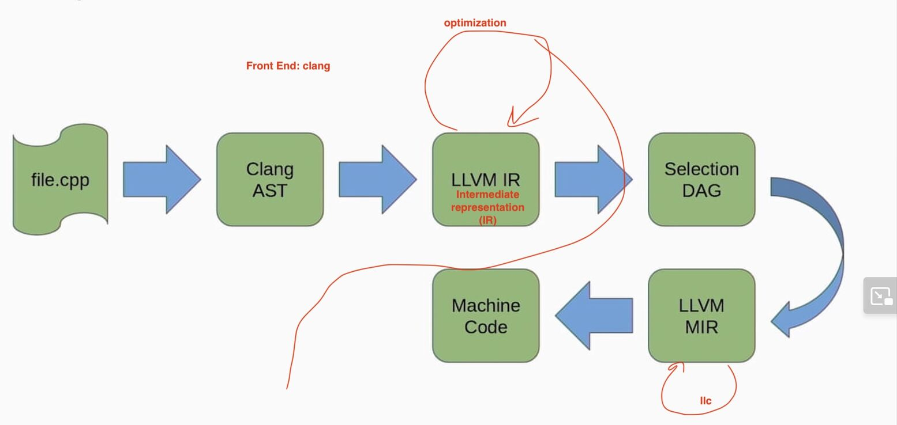
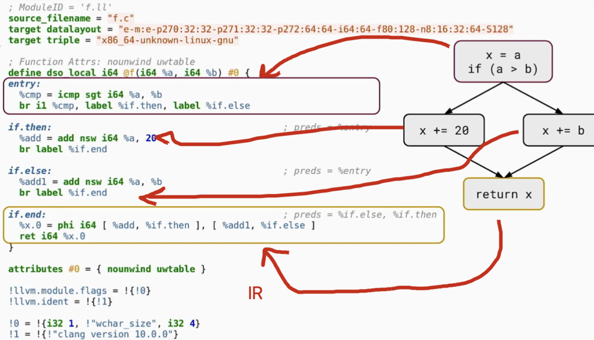
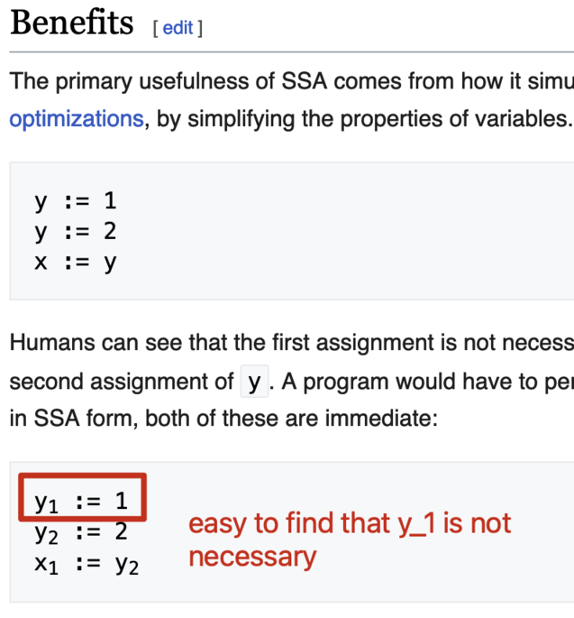
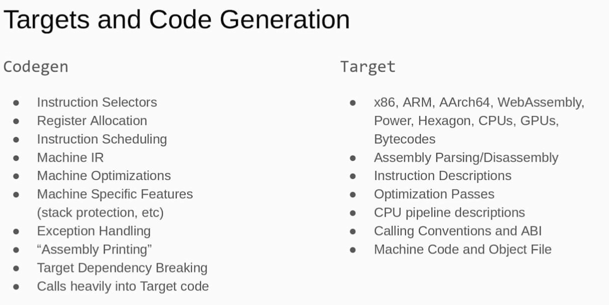

My note on LLVM
This is my note for This LLVM Talk. This is a very beginning level note.
Code
- LLVM monorepo: Now the single source of truth is now in github.
- Subdirectories:
- Each one is a sub project.
- The most famous one is
llvm-project/clang(the “core”)(front-end for C/C++/Cuda, etc)(what is front-end)
- Building: default building is debug build, and very slow
- More on /GettingStarted.html
Compilers
file.cpp -> Clang AST -> LLVM IR -> Selection DAG -> LLVM MIR -> Machine Code 
-
LLVM-IR 
- LLVM IR Hierarchy
Module GlobalVariable Function BasicBlock Instruction ICmpInst BranchInst - assembly-like language always in SSA-from with infinite registers
- What is SSA: Static Single-assignment form
-
In compiler design, static single assignment form (often abbreviated as SSA form or simply SSA) is a type of intermediate representation (IR) where each variable is assigned exactly once. SSA is used in most high-quality optimizing compilers for imperative languages, including LLVM, the GNU Compiler Collection, and many commercial compilers.
- 
-
- What is SSA: Static Single-assignment form
- LLVM IR Hierarchy
-
Target and Code Generation 
- Target
- target means architecture the code is generated for: x86, ARM, powerPC etc.
- SubTarget
- Module level
- Can choose only generate subtarget
- Machine IR (MIR)
- They are target dependent
- produced out of llc program
- What is llc program
-
The llc command compiles LLVM source inputs into assembly language for a specified architecture. The assembly language output can then be passed through a native assembler and linker to generate a native executable.The choice of architecture for the output assembly code is automatically determined from the input file, unless the -march option is used to override the default.
-
- What is llc program
- Instruction Selection and Register Allocation
- What is Instruction Selection
-
In computer science, instruction selection is the stage of a compiler backend that transforms its middle-level intermediate representation (IR) into a low-level IR.
-
- We have 3 instruction selectors
- SelectionDAG
- FastISel
- GlobalISel
- What is Instruction Selection
- Target
If you like my article and want to donate, click the 捐赠 Donation button on the sidebar.